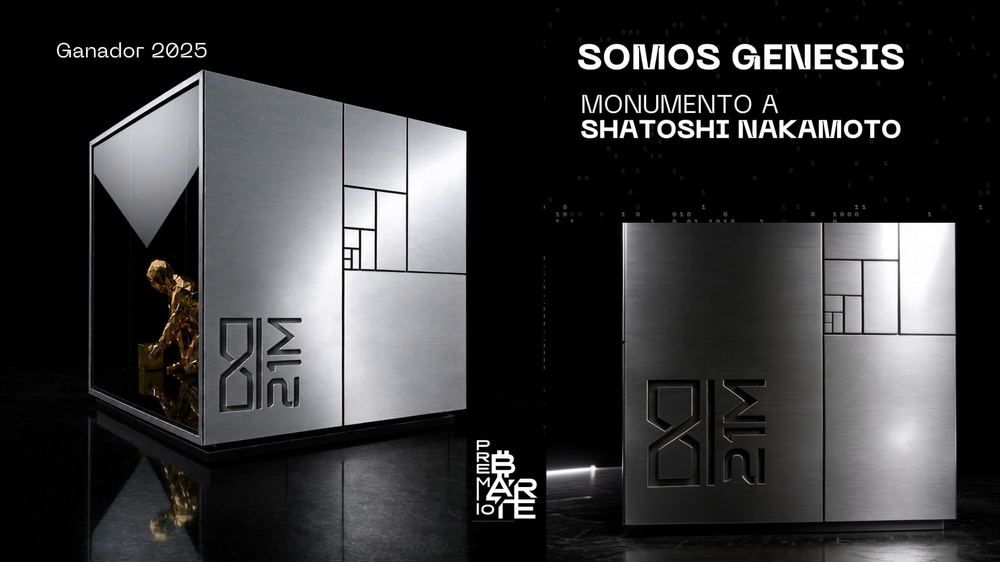

Somos Génesis · souvenir impreso en 3D · revisión antes de imprimir
Cubo Satoshi
Las tres piezas que pidió Clau, en tamaño real de 80 mm. Arrastrá para girar el cubo y pellizcá o usá la rueda para acercarte a las letras.
Cargando modelo…
80 × 80 × 83 mm · acero simulado
Fidelidad con el monumento
Arriba está el frame del video del monumento y abajo el render de la pieza con el mismo ángulo. Compará la posición del logo ∞/21M, la espiral de halving y la base que hace flotar el cubo.

Video del monumento (Premio Bitcoin Arte, ganador 2025)
Archivos para imprimir
Los STL están en milímetros. Calado y sin letras vienen acostados sobre la cara de atrás, con la abertura hacia arriba, y no llevan soportes. El de relieve viene parado.
OKLas tres mallas están cerradas y son manifold: 0 aristas abiertas y 0 geometría suelta. Las unidades son milímetros.
OKParedes de 3 mm. Grabados de 0.8 mm de profundidad. Juntas del halving de 0.8 mm de ancho.
OKEl logo tiene trazos de ~1.4 mm y cortes stencil de ~0.9 mm, así que sale bien en FDM y en resina.
OKEl techo tiene letras de ~6 mm de alto, legibles en cualquier tecnología.
RiesgoLa frase del whitepaper tiene letras de ~3 mm con trazos de ~0.5 mm. En resina sale bien. En FDM con boquilla 0.4 está al límite, y para eso sirve la prueba de un sector.
OjoLa versión en relieve no se puede apoyar sobre la cara de la frase. Necesita otra orientación con soportes, y eso lo decide Clau.